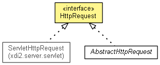

xdi2.server.transport
Interface HttpRequest
- All Known Implementing Classes:
- AbstractHttpRequest, ServletHttpRequest
public interface HttpRequest

This interface abstracts path information about a request to the server.
This is used by the HttpTransport.
- Author:
- markus
getBaseUri
String getBaseUri()
getRequestPath
String getRequestPath()
getParameter
String getParameter(String name)
getHeader
String getHeader(String name)
getContentType
String getContentType()
getContentLength
int getContentLength()
lookup
void lookup(HttpEndpointRegistry httpEndpointRegistry)
throws Xdi2ServerException,
Xdi2MessagingException
- Throws:
Xdi2ServerException
Xdi2MessagingException
getMessagingTargetPath
String getMessagingTargetPath()
getMessagingTarget
MessagingTarget getMessagingTarget()
getBodyInputStream
InputStream getBodyInputStream()
throws IOException
- Throws:
IOException
Copyright © 2013. All Rights Reserved.